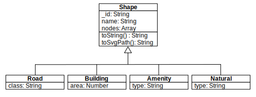

Le Havre University
Yoann Pigné
2014
var i = 0;var i=0, j=i+1, k;/* multi-line
comment */// single line commentOne letter or underscore optionally followed by one or more letters, digits, underscores.
abstract boolean break byte case catch char class const continue debugger default delete do double else enum export extends false final finally float for function goto if implements import in instanceof int interface long native new null package private protected public return short static super switch synchronized this throw throws transient true try typeof var volatile void while with
123
123.456
123.456e+7
1 is the same value as
1.0.0.1 + 0.2 !== 0.3) as in all programming languages.
NaN is a value that results from an operation producing abnormal arithmetic result.isNaN(number) can spot NaNs.Infinity > 1.79769313486231570e+308
Math object.
Math.floor(3.45); // 3
Math.random(); // 0.22312605078332126
Math.PI; // 3.141592653589793
Math.sin(Math.PI/2); // 1
parseInt(string, base)
parseInt("345€", 10); // 345
parseInt("$345", 10); // 'undefined'
parseInt("8"); // 8
parseInt("08"); // 0 -> leading 0 is understood as octal base
parseInt("08", 10); // 8 -> always give the base!!!
'this string',
"that string")."" is allowed (0 characters).char type. We use one-character strings (
"a").\(backslash) escapes characters."\\ \" \' \n \/ \t \b \f \r \u0065"
"\u004A \u0053 \u062D \u0F1C \u3FEF \u0DF4" === "J S ح ༜ 㿯 ෴"
'\uFFFF' need 2 JS characters.+ operator has 2 function:
concatenation
of strings and
addition
of numbers."J" + "S" === "JS"
"HTML" + 10 / 2 === "HTML5"
length property (number of 16 bits unicode characters in the string)."€\u5555ñ".length === 3
"€\u5555ñ" === '€啕ñ'
String pseudo-class has methods.var s = "ok/ko";
var s1 = s;
s += "/ok"; // 'ok/ko/ok' but strings are immutable, so s is a new object.
s1; // 'ok/ko' The original object remains unchanged.
s1.toUpperCase(); // 'OK/KO'
s1.split('/'); // [ 'ok', 'ko' ]
s1.replace('/', ' ≠ '); // 'ok ≠ ko'
"one, two , three".split(/\s*,\s*/); // [ 'one', 'two', 'three' ]
String.fromCharCode(74, 83) // "JS"if (expression) {
// statements;
} else if (expression) {
// statements;
}var i; // at beginning of function
// ...
for (i = 0; i < 10; i += 1) {
// statements;
}
for (i in obj) {
// statements;
}var i; // at beginning of function
// ...
i = 0;
while (i < 10) {
// statements;
}switch (expression) {
case expression:
// statements;
break;
default:
// statements;
}
. [] ()
|
Refinement and invocation |
delete new typeof - + !
|
Unary operators |
* / %
|
Multiplication, division, modulo |
+ -
|
Addition (or string concatenation), subtraction |
<= < >= >
|
Inequalities |
=== !==
|
Equality |
&&
|
Logical AND |
||
|
Logical OR |
?:
|
Ternary operator |
object.property;
object['property'];my_function(param1, param2);{
property1: 'value1',
my_property: true,
"% of value": 23
}["a", 'b', 'c', 3, true, my_obj]/^[a-zA-Z_][a-zA-Z_0-9]*$/ // recognizes javascript 'names'function my_function(p1, p2) {
// var statements;
// statements
}some_function(p1, p2, function(){
// var statements;
// statements;
});function myFunction(){
"use strict";
// instructions...
}forgotTheVar = 17; // throws a ReferenceError
delete Object.prototype; // throws a TypeError
var o = { p: 1, p: 2 }; // !!! syntax error
function sum(a, a, c){ /* ... */ }// !!! syntax error
var sum = 015; // !!! syntax error"use strict";
var o = { x:17 };
with (o) { console.log(x); } // !!! syntax error
var x = 17;
var evalX = eval("'use strict'; var x = 42; x");
x === 17; // true
evalX === 42; // trueclass, enum, export, extends, import, super)null and
undefined are simple and
immutable
types./^[a-zA-Z_][a-zA-Z_0-9]*$/).undefined.var w = {
"°C": 27,
humidity: "80%",
place: "Le Havre"
}w['°C']; //27
w.humidity; //"80%"
w.pressure; //'undefined'
w.pressure = 1030;
w.place = "Nice";var w2 = w;
w['°C']=34;
w2['°C']; // 34Object.prototype.Object.prototype.var o = {
"a": 0,
"b": false
};
Object.prototype.ok = function() {
return "That's OK!"
};
Object.prototype.not_ok = "Not OK.";
o.ok(); // "That's OK!"
o.not_ok; // "Not OK."
o
{"a":0, "b":false}
Object.prototype
{
ok: [Function], not_ok: 'Not OK.'}
undefined
Several technics allow the creation of new objects. The most common uses Constructor Functions and the new operator.
this)function Point() {
this.x = 0;
this.y = 0;
this.toString = function() {
return "("+ this.x + ", " + this.y + ")";
};
}new operatorthis in the
CF
.var p1 = new Point();
p1; // { x: 0, y: 0, toString: [Function] } var prop;
for (prop in p1){
console.log(prop+" : "+p1[prop]);
}hasOwnProperty filter only properties (not function) belonging to that object.
for(var prop in options) {
if(options.hasOwnProperty(prop) && this.hasOwnProperty(prop)) {
this[prop] = options[prop];
}
}delete p1.x; // true
p1.x; // undefinedFunction.prototype(which is itself linked to
Object.prototype).prototype property,
different from the
prototype link.
this.arguments holds the given parameters.
function f(a) {
for (var i = 0; i < arguments.length; i++) {
console.log(i + "=>" + arguments[i]);
}
}
f("ok",false) // 0=>ok
// 1=>falsevar obj1 = new Object1( w, h, c, o, s);
var obj2 = new Object2({
width : w,
height : h,
color: c,
opacity: o,
shadow: s
});this refers to the object that owns the method.var p1 = {
x: 10,
y: 10,
toString: function() { /* definition of a method */
return "(" + this.x + ", " + this.y + ")";
}
};
// invocation of 'toString' as a method
p1.toString(); // "(10, 10)"var my_name_is = "global";
function f() {
var my_name_is = "local to f()";
function print_name() {
console.log(this.my_name_is);
}
print_name();
}
f(); // globalthis is meant to refer to the
new object.prototype property is used to initialize the new object's prototype link.return statement or if the function doesn't return an object, then
this is automatically returned.function Point(x, y) {
this.x = x || 0;
this.y = y || 0;
}
Point.prototype.toString = function() {
return "("+ this.x + ", " + this.y + ")";
};
var p = new Point();apply
apply method belongs to
Function.apply invokes the function with a given context (
this).var weirdo = {
x: "\u03B1",
y: "\u03B2"
}
Point.prototype.toString.apply(weirdo); // '(α, β)'
p.toString.apply(weirdo); // '(α, β)'
throw statement.try / catch statements.function Point(x, y) {
if ((typeof x !== 'undefined' && typeof x !== 'number')
|| (typeof y !== 'undefined' && typeof y !== 'number')) {
throw { name: 'TypeError', message: "'Point' needs numbers" };
}
// ...
}
(function() {
try {
var weirdo = new Point("\u03B1", 0);
} catch (e) {
console.log(e.name + ': ' + e.message);
}
})(); // TypeError: 'Point' needs numbersString.prototype.trim = function() {
return this.replace(/^\s*|\s*$/, '');
};
" Ok then ".trim(); // 'Ok then'
Number.prototype.integer = function() {
return Math[this >= 0 ? 'floor' : 'ceil'](this);
};
(2.34).integer(); // 2
(-Math.PI).integer(); // -3function fib(n) {
if (n <= 2) {
return 1;
}
return fib(n - 1) + fib(n - 2);
}
function f () {
var a = 10, b = 2;
function f2() {
var b = 20, c = 2;
// a : 10, b : 20, c : 2
}
f2();
// a : 10, b : 2, 'c' exists but is undefined
if (a > 0) {
var c = 34;
b = 25;
// a : 10, b : 25, c : 34
}
// a : 10, b : 25, c : 34
}
f();Use immediately invoked function expressions to prevent polluting the global scope.
var a = 1;
(function(){
var a = 0
console.log(a); // 0
})();
console.log(a); // 1function f_outer() {
function f_inner() {
return "Inner function";
}
return f_inner;
}var f = f_outer(); // f_inner
f(); // "Inner function"function increment() {
var counter = 0;
return function() {
counter = counter + 1;
return counter;
};
}var my_increment = increment();
my_increment(); // 1
my_increment(); // 2
my_increment(); // 3
my_increment(); // 4function html_to_md() {
var tokens = {
"p": "\n",
"/p": "\n",
"h1": "#",
// ...
};
return function(html) {
return html.replace(/<([^<>]+)>/g, function(a, b) {
var t = tokens[b];
console.log(t);
return typeof t === 'string' ? t : a;
});
};
}
var parse = html_to_md();
parse("<h1>My Title</h1><h2>Subtitle<...");
// #My Title#\n ##Subtitle##...function createPoint() {
var x = 0;
var y = 0;
// ...
return {
getX: function() {
return x;
},
setX: function(new_x) {
check_number(new_x);
x = new_x;
},
// ...
};
}var p = createPoint();
// new object without 'new' operator
p.x; // 'undefined'
p.getX(); // 0
p.setY(-12);
p.toString(); // "(0, -12)"
var prop;
(function(global) {
global.MY_MODULE = global.MY_MODULE || {};
// private API
function hidden_function() {
console.log("You called a hidden function.");
}
// public API
global.MY_MODULE.publicFunction = function() {
console.log("Public function calling a hidden one...");
hidden_function();
};
})(this);
for (prop in MY_MODULE) {
console.log(prop);
}
MY_MODULE.publicFunction(); // Public function calling a hidden one...
// You called an hidden function.new operator is risky.var p,
Point3D = function() {
this.z = 0;
};
Point3D.prototype = new Point();
Point3D.prototype.toString = function() {
return "(" + this.x + ", " + this.y + ", " + this.z + ")";
};
p = new Point3D();
p.x = p.y = p.z = -3;
p.toString(); // '(-1, -2, -3)';new operators.function createObject(base) { // Utility function to
function F() {}; // create objects with
F.prototype = base; // 'base' as a prototype.
return new F();
}
var point = { x: 0, y: 0 }, // A 'base' object.
p3d = createObject(point); // New object with 'point' as its prototype.
p3d.z = 0; // Differences from 'point'.
p3d.toString = function() {
return "(" + this.x + ", " + this.y + ", " + this.z + ")";
};
p3d.toString(); // "(0, 0, 0)"new operator).
var createPoint = function(attributes) {
attributes = attributes || {};
attributes.x = attributes.x || 0; // Hidden attributes, given as parameters.
attributes.y = attributes.y || 0;
// ...
var point = {}; // The new object to be returned.
point.toString = function() { // public methods accessing hidden parameters.
return "(" + attributes.x + ", " + attributes.y + ")";
};
// ...
return point; // return the newly created object.
};
var p1 = createPoint({ x: -1, y: -4 });
var createPoint3D = function(attributes) {
attributes = attributes || {};
attributes.z = attributes.z || 0;
var point3D = createPoint(attributes); // create a new object from upper hierarchy
point3D.toString = function() {
return "(" + attributes.x + ", " + attributes.y + ", " + attributes.z + ")";
};
// ...
return point3D;
};
var p3d = createPoint3D({ x: -3, y: -3, z: -4 });Code reuse or access to
super members can be done with the
apply invocation pattern.
var createAugmentedPoint3D = function(attributes) {
attributes = attributes || {};
attributes.width = attributes.width || "1px";
attributes.color = attributes.color || "#00FF00";
var augmentedPoint3D = createPoint3D(attributes);
var superToString = augmentedPoint3D.toString; // Store the super toString
// method locally.
augmentedPoint3D.toString = function() { // Shadow super toString
// and call it with 'apply'.
return "{" + superToString.apply(augmentedPoint3D) + ", width:" +
attributes.width + ", color:" + attributes.color + "}";
};
return augmentedPoint3D;
};
var ap3d = createAugmentedPoint3D({ color: "#b3e4a2" });
ap3d.toString(); // '{(0, 0, 0), width:1px, color:#b3e4a2}'var a = [ 'a', 'b', ['c', 'd'], true];
var b = [];a[0]; // 'a'.a[0] === a['0'] // true.a[10] = 'k';
a[8]; // 'undefined'
a; // ['a', 'b', ['c', 'd'], true, , , , , , , , 'k']
var prop;
for (prop in a) {
if (a.hasOwnProperty(prop)) { console.log(prop);}
} // 0 1 2 3 10length property. The highest index plus one, not this actual size:
a.length; // 11a[a.length]="v1";
a.push("v2");delete operator can be use (as for objects) but array will not be rearranged. We use
splice instead. delete a[2]; // ['a', 'b', , true, , , , , , , , 'k', "v1", "v2"]
a.length; // 13
a.splice(2, 1); // ['a', 'b', true, , , , , , , , 'k', "v1", "v2"]
a.length; // 12this plus the
flatten items given in parameters:
var a = ["a", "b", "c"];
var b = ["d", "e", "f"];
var c = a.concat(b, "g", "h");
c; // ['a','b','c','d','e','f','g','h']a.push(b, "g", "h");
a; // ['a', 'b', 'c', ['d', 'e', 'f'], 'g', 'h']separator is inserted between each value.
a.join("-"); // 'a-b-c-d-e-f-g-h'
pop() and
push(...) are used.
var a = ['x', 'y', 'z'];
a.pop(); // 'z', a : ['x', 'y']a.unshift("a"); // 3
a; // ['a', 'x', 'y']a.shift(); // "a"
a; // ['x', 'y']len" elements at position "beg" and insert items "item..." at that position. Re-indexing if needed.
var a = ['a', 'b', 'c'];
a.splice(1, 1, "b1", "b2"); // ['b']
a; // ['a', 'b1', 'b2', 'c']beg and
end indices. Original array not affected.
a.slice(1, 2); // ['b1', 'b2'];
a; // ['a', 'b1', 'b2', 'c']Reorders the array according to the given function. The function takes 2 args (
a,b) and returns 0 id
a === b, a positive number if
a > b, and a negative number if
b > a.
function by(prop){
return function(obj1, obj2){
var a = obj1[prop],
b = obj2[prop];
if(a === b){
return 0;
}
return a > b ? 1 : -1;
}
}
var pts = [ {x:10,y:34},
{x:-10,y:4},
{x:0,y:-4}];var i;
pts.sort(by('y'));
for(i = 0 ; i < pts.length; i++) {
console.log(
Point.prototype.toString.apply(pts[i])
);
}
// (0, -4)
// (-10, 4)
// (10, 34)
var _ = require('lodash'); // loading lodash in node.js
_.map([1, 2, 3], function(num) { return num * 3; });
// → [3, 6, 9]
_.reduce([1, 2, 3], function(sum, num) {
return sum + num;
});
// → 6
exec, test, match, replace, search, split./* matching ip addresses */
var worst = /^\d+\.\d+.\d+.\d+$/;
var bad = /^(?:\d{1,3}\.){3}\d{1,3}$/
var better = /^(?:\b(?:25[0-5]|2[0-4][0-9]|[01]?[0-9][0-9]?)\b\.){3}
\b(?:25[0-5]|2[0-4][0-9]|[01]?[0-9]?[0-9])\b$/null.{
"type": "line",
"points": [
{
"x": -1, "y": -1
},
{
"x": 10, "y": 100
}
]
}JSON.parse() is used to parse JSON data.eval() function.
var shape = JSON.parse(
'{
"type":"line",
"points":[
{"x":-1,"y":-1},
{"x":10,"y":100}
]
}'
);
shape.type; // 'line'
shape.points.length; // 2JSON is used as a way to import raw data from a server and to create models from it. Classical steps are:
Considering a JSON dataset containing geographical map data, one want to create a read only model (no write access) which represents the various geographical objects.
[
{
"_id": "-630059",
"building": true,
"nodes": [
{
"x": 608.0,
"y": 302.0
},
{
"x": 610.0,
"y": 305.0
},
{
"x": 608.0,
"y": 302.0
}
]
}, {
"_id": "-630043",
"building": false,
"name": "Bassin Paul Vatine",
"natural": "water",
"nodes": [
{
"e": "e"
}
]
}, {
"_id": "-630016",
"building": false,
"highway": "residential",
"name": "Place D\u00e9sir\u00e9 Rebeuf",
"nodes": [
{
"x": 633.0,
"y": 453.0
},
{
"x": 677.0,
"y": 438.0
}
]
}
]
nodes attribute is an array of objects ([{x:23,y:45},{x:3,y:5},{x:12,y:0}])that can be simplified into an array of arrays (
[[23,45],[3,5],[12,0]]). What about Lo-Dash?toSvgPath() method should return a string such as:
"M 23 45 L 3 5 L 12 0"
node.js:
var fs = require('fs');
var raw_data = fs.readFileSync('eure.json', 'utf8');